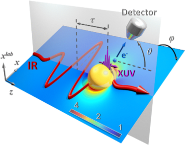
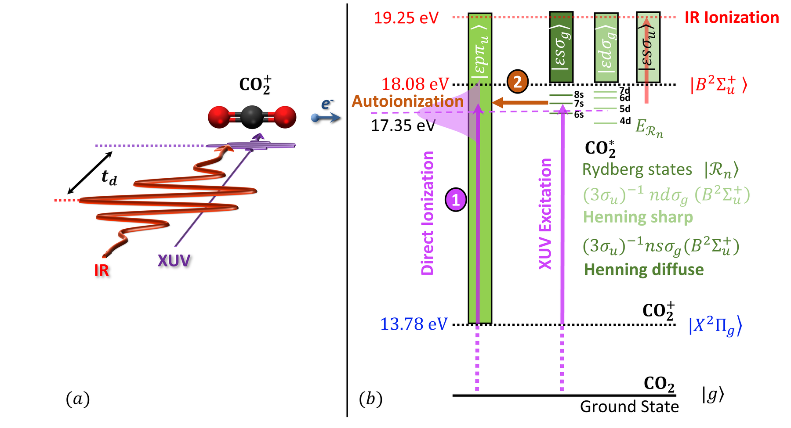

Research
My research centers on ultrafast and strong-field physics in molecules and nanoparticles, with theoretical and computational models designed for direct comparison with experiment.
The research program combines semiclassical and quantum approaches to explain how intense laser fields drive electrons and nuclei on attosecond to picosecond timescales. The project pages below provide detailed methods and results; this page summarizes the overall structure of the program.
I. Strong-field physics of nanoparticles
Strong-field physics investigates matter in electromagnetic fields that typically exceed W/cm², where multiphoton ionization, tunneling, rescattering, and high-harmonic processes emerge. In this work, metal nanoparticles are exposed to intense infrared pulses and the emitted photoelectron spectra are analyzed in terms of competing direct and rescattered pathways.
To model this, I extend the semiclassical three-step framework to nanoparticles:
- Electron release via quantum tunneling.
- Propagation from the nanoparticle surface to the detector along classical trajectories.
- Rescattering and recombination at the nanoparticle surface.
For nanoparticles, each step is modified by morphology, collective emission, photoelectron-photoelectron correlations, residual charging, and induced nanoplasmonic near fields.
II. Ultrafast physics in molecules and nanoparticles
Ultrafast physics in atomic, molecular, and nanoscale systems resolves coupled electronic, vibrational, and rotational dynamics across attosecond, femtosecond, and picosecond windows. Electronic excitation can trigger vibrational and rotational response, so interpreting measurements requires time-domain models that track these coupled motions.
a. Attosecond streaking spectroscopy of nanoparticles
I developed classical and quantum models for streaked photoelectron spectra from metal nanoparticles. The classical model tracks XUV excitation, electron transport inside the nanoparticle, surface escape, and propagation to the detector. The quantum model combines Mie-theory induced fields with T-matrix photoemission amplitudes. Together, these models enable reconstruction of induced plasmonic fields with nanometer spatial and sub-femtosecond temporal resolution.
b. Ultrafast dynamics of molecular Rydberg states
I developed an analytical-numerical framework for autoionizing molecular Rydberg states excited by XUV pulses and perturbed by delayed NIR pulses. By solving the time-dependent Schrodinger equation with Fano-parameterized resonances, the model tracks population transfer, state coupling, and competing decay through autoionization and NIR ionization. Applied to CO2, the model reproduces key features of measured pump-probe photoelectron yields.
An additional emerging direction on this site is quantum light and light-matter coupling, which connects naturally to the ultrafast program through confined and plasmon-enhanced electromagnetic fields.

Strong-field physics of nanoparticles
Photoelectron emission from nanoparticles in intense laser fields, where the atomic three-step picture stops predicting the measured cutoff energies.

Attosecond imaging of plasmonic near fields
Reconstructing the field around a nanoparticle from streaked photoelectron spectra, with nanometer spatial and sub-femtosecond temporal resolution.

Ultrafast dynamics of molecular Rydberg states
A time-domain Fano model for autoionizing Rydberg states in molecules, applied to CO₂ and compared against pump–probe measurements.
Quantum light and light–matter coupling
Non-classical light in integrated photonic circuits, and molecules coupled strongly enough to a confined field that the light becomes part of the chemistry.